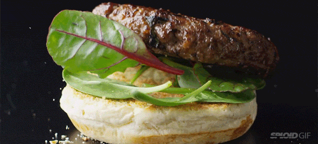

<div id="carouselExampleFade" class="carousel slide carousel-fade" data-bs-ride="carousel">
    <div class="carousel-inner">
      <div class="carousel-item active">
        
      </div>
      
    </div>
    
  </div>